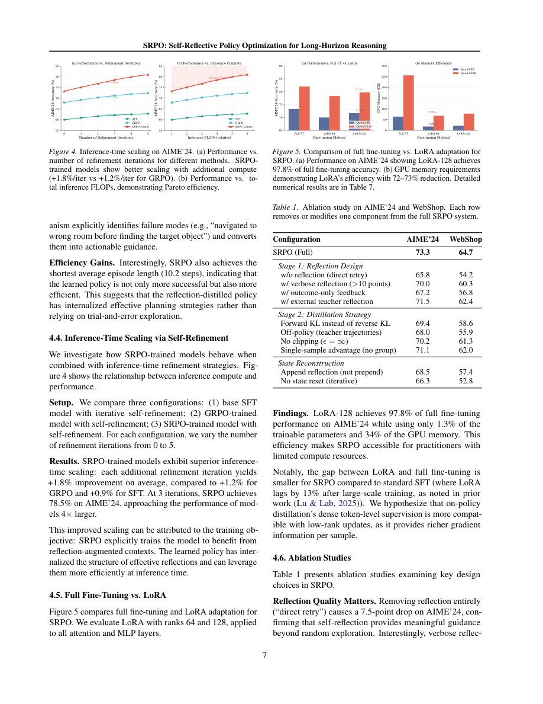

#1
★ 8/10
SRPO: Self-Reflective Policy Optimization for Long-Horizon Reasoning
SRPO：面向长程推理的自反思策略优化

图 Figure · Page 7 of paper
🎯 让大模型像人一样反思错误，用极少算力达到顶尖推理性能
SRPO teaches LLMs to learn from their own mistakes using self-reflection, achieving top math and agent reasoning with 8x less compute.
🗣️ 一句话比喻 · Plain-English Analogy就像一个学生考完试后，不只看最终对错，而是翻回草稿纸逐行检查，贴上便利贴："第三行代数搞错了，下次应该这样做"——然后靠这些便利贴高效复习。SRPO就是给AI模型这种"贴便利贴自我复盘"的超能力，而且完全不需要老师！Think of it like a student who, instead of just checking if they got the final answer right, goes back through every line of their scratch work, writes a sticky note saying "I messed up the algebra here — next time do THIS instead," and uses those sticky notes to study smarter. SRPO gives AI models that same sticky-note superpower — no tutor required.
| 维度 | 中文 | English |
|---|---|---|
| ❓ 待解决 的问题 |
当AI模型尝试解决复杂的多步骤问题时（比如网页搜索、写代码或解数学题），通常只在最后得到一个"对或错"的信号。就像你考完试只被告知"不及格"，却不知道哪道题错了、为什么错。这让模型很难搞清楚问题出在哪里、该如何改进。现有的方法要么需要更大更贵的"老师模型"，要么需要复杂的奖励机制，代价很高。 | When AI models try to solve complex, multi-step problems — like browsing the web, writing code, or solving math — they usually only get a single "right or wrong" signal at the very end. It's like studying for an exam and only being told "you failed" with no feedback on which questions you got wrong. This makes it hard for the model to figure out where exactly it went wrong and how to improve. Existing solutions either require expensive bigger teacher models or elaborate separate reward systems. |
| 💡 解决 的亮点 |
• 无需外部大型教师模型，SRPO让模型自己回顾、批评并学习自己的做题过程，实现真正的自我提升。• 将最终的"对/错"单一信号，转化为每一步都有详细指导的"反思补丁"，精准告知哪里出错、怎么改。• 在数学推理和真实世界智能体任务上均达到顶尖水平，却只需通常所需算力的8%，效率大幅领先。 | • Instead of relying on a separate, larger teacher model, SRPO lets the model critique and learn from its own completed attempts — true self-improvement. • It converts a single "pass/fail" outcome into rich, step-by-step learning signals ("reflection patches") that tell the model exactly what went wrong at each step. • Achieves state-of-the-art results on both math reasoning AND real-world agent tasks using only 8% of the computing power normally required — a huge efficiency leap. |
| 🧪 实验 内容 |
研究团队以Qwen3-8B为基础模型，在多个高难度基准上测试了SRPO：数学竞赛题（AIME 2024、AIME 2025、AMC）、真实网络购物任务（WebShop）、家庭机器人指令执行（ALFWorld）以及软件工程bug修复（SWE-Bench-Lite）。与之对比的基线包括标准监督微调（SFT）、GRPO强化学习以及其他自我提升方法，评估指标为准确率和任务成功率，同时严格统计训练所需算力（FLOPs）。 | The team tested SRPO on a Qwen3-8B base model across several challenging benchmarks: math competition problems (AIME 2024, AIME 2025, AMC), real-world web shopping tasks (WebShop), household robot instruction following (ALFWorld), and software engineering bug fixing (SWE-Bench-Lite). They compared against strong baselines including standard supervised fine-tuning (SFT), GRPO reinforcement learning, and other self-improvement methods, measuring accuracy and task success rate while carefully tracking training compute costs (FLOPs). |
| 📊 实验 结果 |
在AIME 2024数学竞赛上，SRPO达到73.3%的准确率，仅使用了大规模SFT所需算力的8%（0.08倍），效率提升极为显著。在真实智能体任务上：WebShop成功率64.7%，ALFWorld成功率76.8%，SWE-Bench-Lite成功率31.2%。这些成绩在所有测试基准上均达到或接近最先进水平，且模型参数量仅8B，训练算力远低于竞争方法。 | On AIME 2024, SRPO hits 73.3% accuracy using only 8% (0.08×) of the training FLOPs needed by scaled SFT — a massive efficiency gain. On real-world agent tasks: WebShop success rate reaches 64.7%, ALFWorld reaches 76.8%, and SWE-Bench-Lite reaches 31.2%. These results represent state-of-the-art or near state-of-the-art performance across all tested benchmarks, achieved with a relatively small 8B-parameter model and far less training compute than competing methods. |
| 🏁 结论 | SRPO证明了：赋予AI模型自我反思错误的能力——无需任何外部教师或奖励系统——是一种高效且有效的训练策略。它在数学推理和复杂现实智能体任务上均达到顶尖水平，所需算力仅为通常方法的一小部分。 | SRPO proves that giving AI models the ability to reflect on their own mistakes — without any external teacher or reward system — is a highly effective and efficient training strategy. It achieves top-tier performance on both math reasoning and complex real-world agent tasks at a fraction of the usual computational cost. |
| 🔗 论文 链接 |
arXiv: 2608.23493v1 · 📥 PDF | |
⚙️ Method · 方法详解
SRPO的工作方式就像一个学生考完试后，仔细回顾每一步解题过程，然后写下一张"错题笔记"："我在第3步犯了这个错误，正确做法应该是……"模型先尝试解题，然后回头审视整个解题路径，生成一段简短的"反思补丁"，总结哪里出错、为什么出错。这段反思随后被用来对原始解答的每一个词（token）重新打分，把模糊的最终结果反馈转化为细致的逐步指导信号。最关键的是：这一切都在模型内部完成，不需要更大的外部教师模型，也不需要单独的奖励模型。
Think of SRPO like a student who, after finishing a test, carefully reviews every step of their working — not just the final answer — and writes down a personal note: "I made this specific mistake at step 3, here's how I should have done it." The model first attempts a problem, then looks back at its entire solution path and generates a short "reflection patch" summarizing what went wrong and why. This reflection is then used as a rich teaching signal to re-score every single token (word) in the original attempt, turning vague end-result feedback into detailed, step-by-step guidance. Critically, this entire process happens inside the model itself — no bigger external teacher or separate reward model is needed.
📐 Key Formulas · 关键公式
\[\mathcal{L}_{\text{SRPO}} = -\mathbb{E}_{\tau \sim \pi_\theta} \left[ \sum_{t} w_t^{\text{reflect}} \log \pi_\theta(a_t | s_t) \right]\]
💡 SRPO的训练目标：用反思生成的逐token权重（w）来引导模型学习，权重越高说明该步骤越值得强化或纠正。
SRPO's training loss: the model is trained by weighting each token in its solution according to reflection scores — tokens at key mistake points get stronger learning signals.
🌟 Why It Matters · 为什么重要
这项工作有望大幅降低训练高性能AI推理系统的成本，让算力资源有限的公司和研究者也能负担得起。它同时指向了一类能通过自我反思持续进步的AI模型——这是迈向更可靠、更自主AI助手的重要一步。
This work could make powerful AI reasoning systems dramatically cheaper to train, lowering the barrier for companies and researchers who can't afford massive compute budgets. It also points toward AI models that continuously improve themselves through reflection — a key step toward more reliable and autonomous AI assistants.